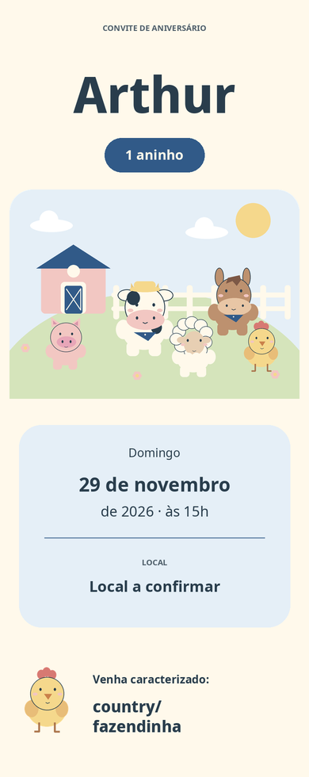
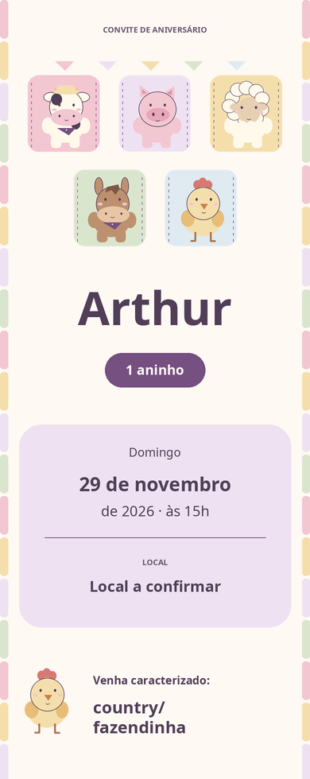
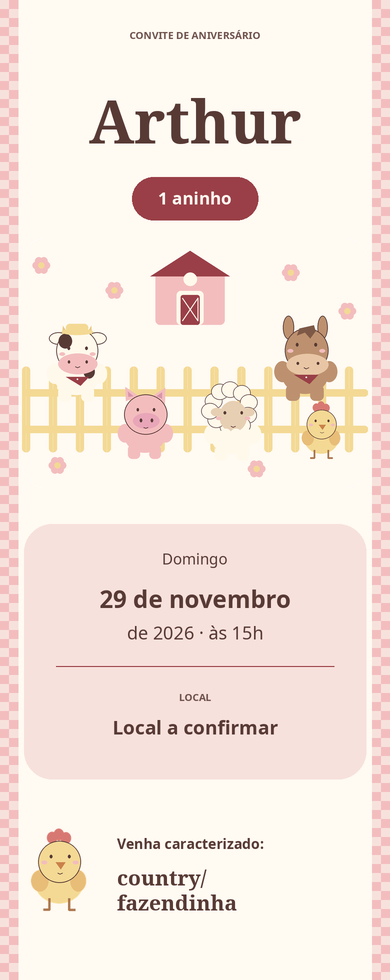
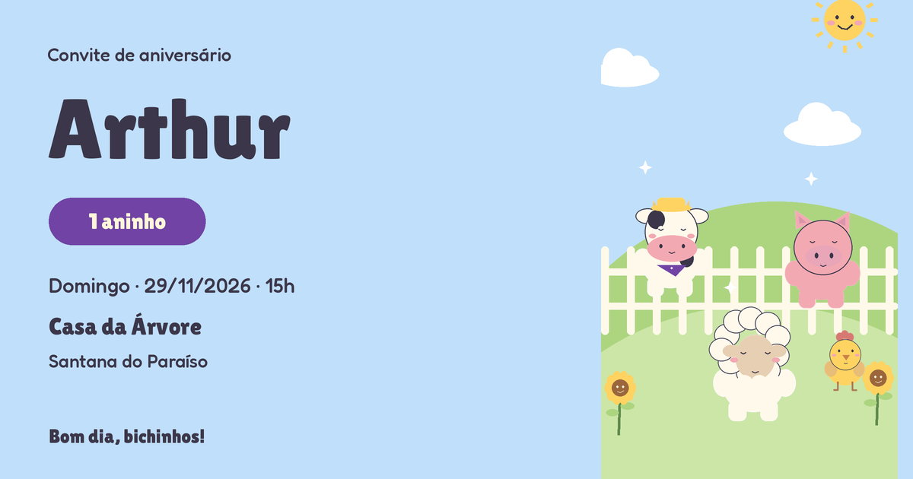
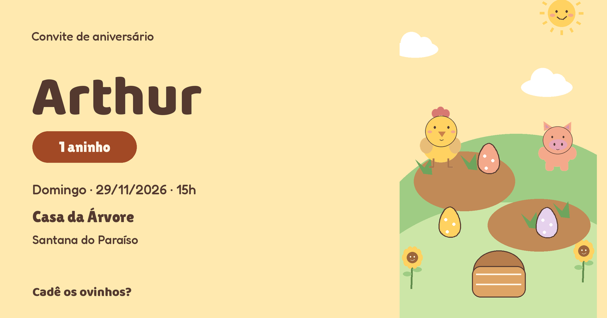
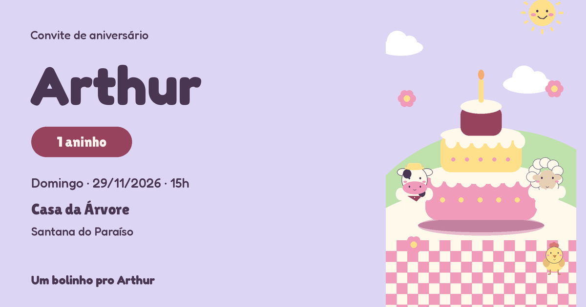

Convite do Arthur — 6 opções para escolha
Seis opções para o tema country/fazendinha, bem infantil, todas com o mesmo conteúdo e o mesmo RSVP. As de 1 a 3 são convites em página; as de 4 a 6 são interativas, com som (ligue no botão 🔇) e animação. Abra no celular.
Arthur, 1 ano · domingo, 29/11/2026, 15h · tema country/fazendinha · venha caracterizado · Casa da Árvore, Rua Castelo Branco, nº 31, Cidade Nova, Santana do Paraíso
Abrir no Google MapsAbrir no Apple MapsAbrir no Waze
-
1. Um dia na fazendinha
Livro ilustrado, céu azul e bichinhos de abraço.

-
2. Retalhos de carinho
Colcha pastel, janelinhas de bichinhos e costuras lúdicas.

-
3. Piquenique dos bichinhos
Xadrez de morango, flores e festa no cercadinho.

-
4. Bom dia, bichinhos!
Interativo: toque em cada bichinho dormindo; ele acorda, faz o som e conta um detalhe da festa. No fim, o sol nasce.

-
5. Cadê os ovinhos?
Interativo: ache os 5 ovos da galinha; cada um racha, sai um pintinho e revela um detalhe da festa.

-
6. Um bolinho pro Arthur
Interativo: monte o bolo camada por camada, ponha os bichinhos, acenda a vela de 1 aninho e assopre.



Ver também as 12 versões v4, por nível de esforço
Prévia local, não publicada. O RSVP grava a confirmação numa planilha privada da família quando o endpoint estiver ativado; até lá, a página mostra "Confirmação ainda não ativada".